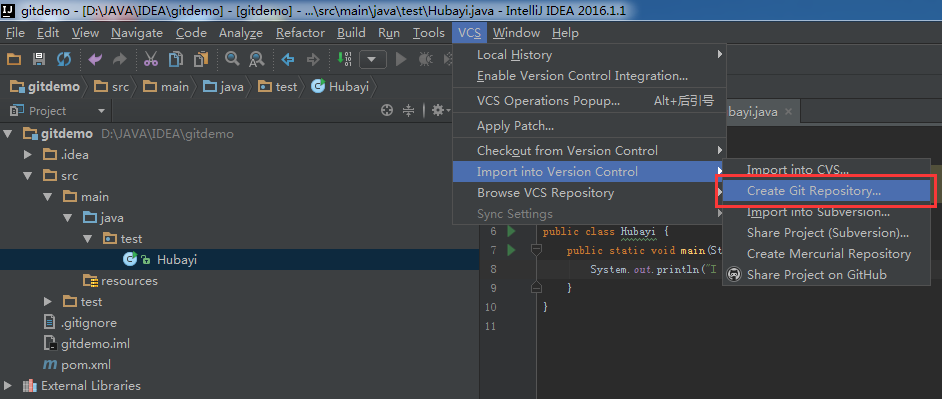

工作中多人使用版本控制软件协作开发，常见的应用场景归纳如下：
假设小组中有两个人，组长小张，组员小袁
- 场景一：小张创建项目并提交到远程Git仓库
- 场景二：小袁从远程Git仓库上获取项目源码
- 场景三：小袁修改了部分源码，提交到远程仓库
- 场景四：小张从远程仓库获取小袁的提交
- 场景五：小袁接受了一个新功能的任务，创建了一个分支并在分支上开发
- 场景六：小袁把分支提交到远程Git仓库
- 场景七：小张获取小袁提交的分支
- 场景八：小张把分支合并到主干
下面来看以上各场景在IDEA中对应的操作。
场景一：小张创建项目并提交到远程Git仓库
创建好项目，选择VCS -> Import into Version Control -> Create Git Repository

接下来指定本地仓库的位置，按个人习惯指定即可，例如这里选择了项目源代码同目录

点击OK后创建完成本地仓库，注意，这里仅仅是本地的。下面把项目源码添加到本地仓库。
下图是Git与提交有关的三个命令对应的操作，Add命令是把文件从IDE的工作目录添加到本地仓库的stage区，Commit命令把stage区的暂存文件提交到当前分支的仓库，并清空stage区。Push命令把本地仓库的提交同步到远程仓库。

IDEA中对操作做了一定的简化，Commit和Push可以在一步中完成。
具体操作，在项目上点击右键，选择Git菜单


因为是第一次提交，Push前需要指定远程仓库的地址。如下图，点击Define remote后，在弹出的窗口中输入远程仓库地址。

场景二：小袁从远程Git仓库上获取项目源码
即克隆项目，操作如下：

输入小张Push时填写的远程仓库地址

接下来按向导操作，即可把项目从远程仓库克隆到本地仓库和IDE工作区。
场景三：小袁修改了部分源码，提交到远程仓库
这个操作和首次提交的流程基本一致，分别是 Add -> Commit -> Push。请参考场景一
场景四：小张从远程仓库获取小袁的提交
获取更新有两个命令：Fetch和Pull，Fetch是从远程仓库下载文件到本地的origin/master，然后可以手动对比修改决定是否合并到本地的master库。Push则是直接下载并合并。如果各成员在工作中都执行修改前先更新的规范，则可以直接使用Pull方式以简化操作。

场景五：小袁接受了一个新功能的任务，创建了一个分支并在分支上开发
建分支也是一个常用的操作，例如临时修改bug、开发不确定是否加入的功能等，都可以创建一个分支，再等待合适的时机合并到主干。
创建流程如下：

选择New Branch并输入一个分支的名称

创建完成后注意IDEA的右下角，如下图，Git: wangpangzi_branch表示已经自动切换到wangpangzi_branch分支，当前工作在这个分支上。
点击后弹出一个小窗口，在Local Branches中有其他可用的本地分支选项，点击后选择Checkout即可切换当前工作的分支。

如下图，点击Checkout

注意，这里创建的分支仅仅在本地仓库，如果想让组长小张获取到这个分支，还需要提交到远程仓库。
场景六：小袁把分支提交到远程Git仓库
切换到新建的分支，使用Push功能


场景七：小张获取小袁提交的分支
使用Pull功能打开更新窗口，点击Remote栏后面的刷新按钮，会在Branches to merge栏中刷新出新的分支。这里并不想做合并，所以不要选中任何分支，直接点击Pull按钮完成操作。

更新后，再点击右下角，可以看到在Remote Branches区已经有了新的分支，点击后在弹出的子菜单中选择Checkout as new local branch，在本地仓库中创建该分支。完成后在Local Branches区也会出现该分支的选项，可以按上面的方法，点击后选择Checkout切换。
场景八：小张把分支合并到主干
新功能开发完成，体验很好，项目组决定把该功能合并到主干上。
切换到master分支，选择Merge Changes

选择要合并的分支，点击Merge完成